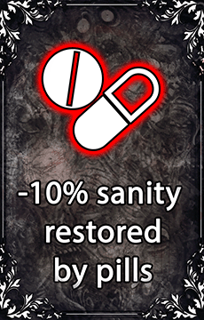
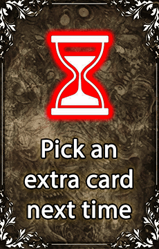
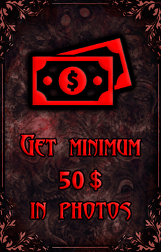

So... how does it work?
Each round, the player plays a random map and must pick 2 cards that add difficulty modifiers or self-imposed challenges. These modifiers will create a custom difficulty just for this run (as of Phasmophobia's v.0.7 "Apocalypse" update), which starts as Professional difficulty and gets harder as the run goes on.
The last card offered will always be a mystery, and all maps are small except during the 3rd and 5th round.
Failing to beat a map or to complete a challenge will fail the run.
Card types

Silver cards
The most common card type. Silver cards will be offered during any round.
These cards add modifiers to your difficulty.

Golden cards
A single golden card appears in all rounds up to the 5th.
These cards change the rules of the run, card generation and selection.

Challenge cards
A single challenge card is offered from the 2nd round onwards.
These cards apply a self-imposed challenge to the player, and tend to be hard.
Hard runs offer more challenges than usual.
Return to main page